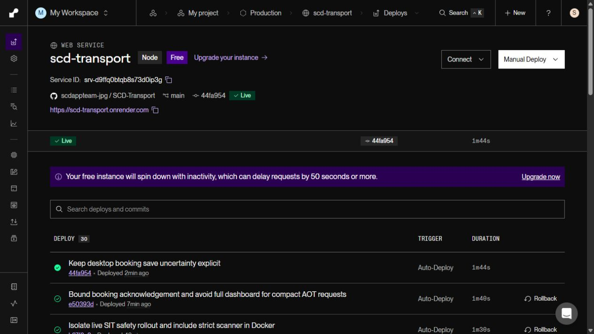
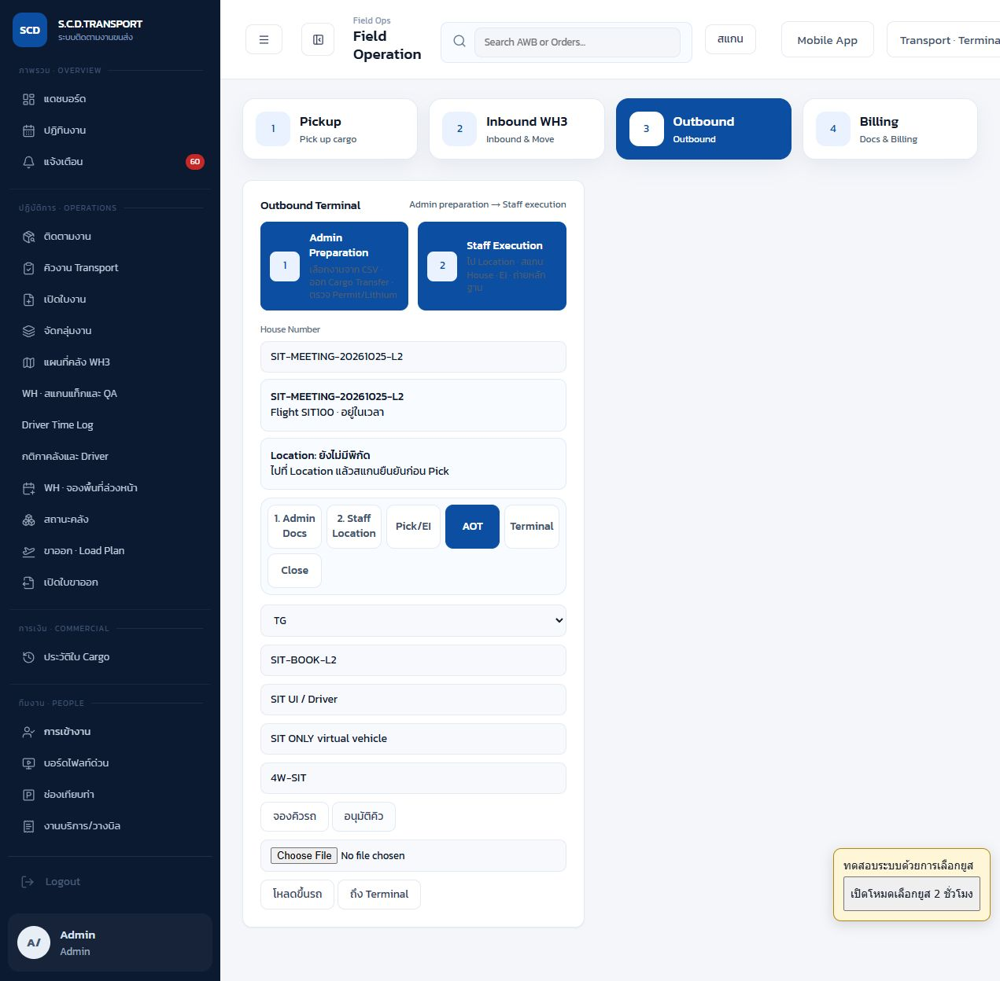
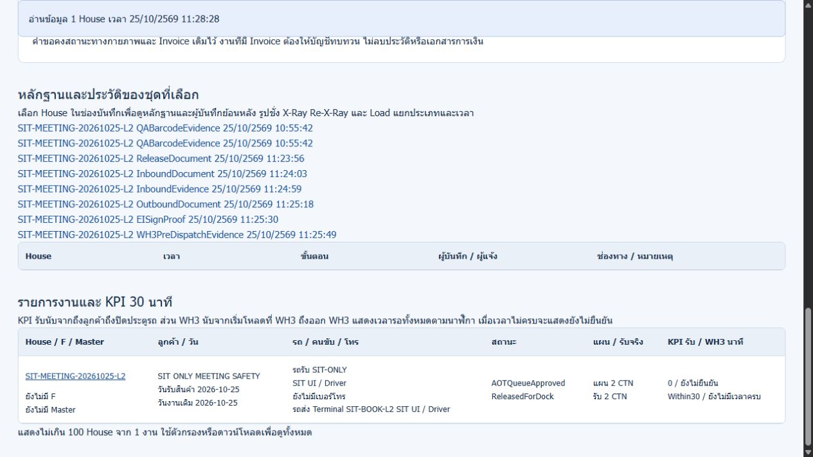
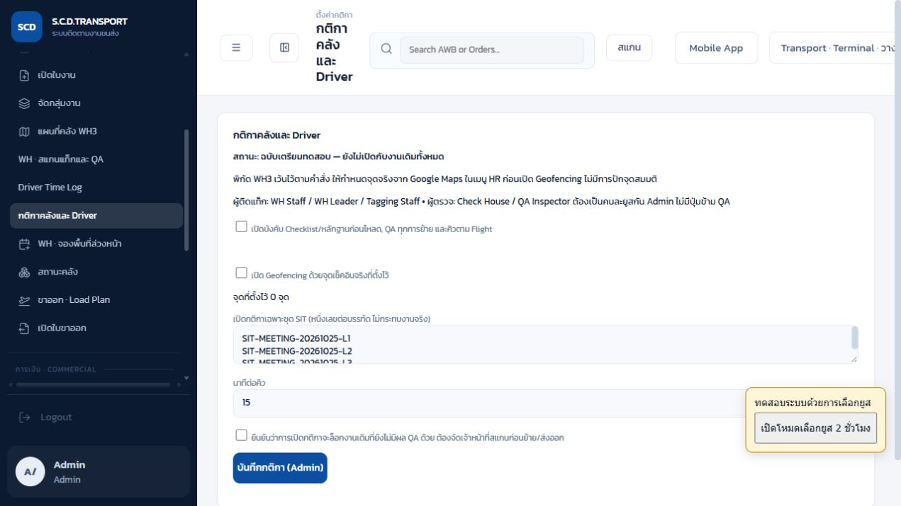

อัปเดต L2 ต่อจนปิด Terminal แล้วL2 เป็น ReadyForBilling / Available คืน Cargo Transfer แล้ว ยอดคง 2 CTN ใช้หลักฐานจำลองเฉพาะ SIT และ Geofencing ปิด
เปิดเอกสารต่อถึงปิดงานและภาพจริง เนื้อหาด้านล่างเป็นประวัติรอบจองคิวก่อนเดินงานต่อ
แก้ timeout ตอนจองคิวรถ — ผลทดสอบซ้ำบนระบบจริง
25 ตุลาคม 2026 • Asia/Bangkok • SCD Transport Production
โค้ดแก้หลัก e50393d และป้องกันผลสำเร็จผิดบนเว็บ 44fa954 • Render แสดง Live รุ่น 44fa954 ก่อนเริ่มจองครั้งแรก
การจองใหม่และอนุมัติผ่าน ไม่มี timeout ในรอบทดสอบนี้
ใช้ House เดิมที่ยังไม่เคยจอง SIT-MEETING-20261025-L2 และรถจำลอง SIT-BOOK-L2 ทดสอบผ่าน API จริงพร้อม header แบบ Mobile และกดจอง/อนุมัติซ้ำจากหน้าจอเว็บจริง ตรวจอ่านกลับว่าเวลาและประวัติไม่เพิ่มซ้ำ
แยกสิ่งที่เกิดในระบบกับสิ่งที่จำลอง
HTTP, เวลาเซิร์ฟเวอร์, การเก็บสถานะ, หน้าเว็บ และไฟล์หลักฐานที่เปิดจาก production เป็นผลจริงของระบบ แต่สินค้า 2 CTN รถ คนขับในสถานการณ์ ภาพ ลายเซ็น เอกสาร และ GPS ของ L2 เป็นข้อมูล SIT ทั้งหมด ไม่มีรถวิ่งจริง ไม่มีการจองกับ AOT ภายนอก และไม่ใช้แทนยอดสินค้าเข้าคลังจริงของลูกค้า
1. ขอบเขตชุดทดสอบ
| รายการ | ข้อมูล |
|---|
| House ที่เปลี่ยนได้ | SIT-MEETING-20261025-L2 เท่านั้น ใช้ชุด Pair เดิม ไม่สร้างงานใหม่ ไม่รีเซ็ต L1 |
| ก่อนทดสอบ | ยังไม่มี aotBookedAt; CS Confirm และออก Cargo แล้ว; มี QA Pair revision 1 เดิม; ยังไม่รับเข้า WH3 ในระบบ |
| เตรียมก่อนจอง | รับสินค้าจำลอง 2 CTN → กลับ WH3 → ใบตรวจปล่อย → ตรวจเอกสาร → รับนับ 2 CTN → ปิด Inbound → เบิกออกด้วย QA เดิม → EI อนุมัติ → ตรวจเอกสาร WH3 ครบ ไม่มีการใช้หรือสร้างพื้นที่คลังจริง |
| Master / F | L2 ยังไม่มี Master/F โดยเจตนา ทดสอบการจองราย House ได้ ไม่เติมเลขสมมติลงงานจริง และไม่ผูกกับ Master จริง 205-86393230 |
| รถ / คนขับ / Terminal | SIT-BOOK-L2 / SIT UI Driver / TG เป็นการจองภายในระบบเท่านั้น |
| จอง / อนุมัติ | 25/10/2026 11:27:07 / 25/10/2026 11:27:20 น. ตามเวลาไทย |
| สถานะท้าย | AOTQueueApproved; รับนับจำลอง 2 CTN; ยังไม่ส่ง Terminal ไม่ปิดเที่ยว และไม่ออก Invoice |
| Geofencing | ปิดตลอดการทดสอบ ไม่มีพิกัด WH3 จริง 0 จุด Global Safety ยังปิดและคง allowlist เฉพาะ SIT เดิม |
2. สิ่งที่แก้และเหตุผล
- คำตอบแบบ Mobile ไม่สร้าง dashboard ทั้งระบบ เดิมเส้นทาง AOT ส่ง dashboard รวมหลายพันงานแม้ผู้เรียกขอ compact แล้ว เปลี่ยนครบทั้งการจอง การอนุมัติ และการกดซ้ำ ให้คืนเฉพาะผลกับงานเป้าหมาย หน้า desktop ยังคงสัญญาคำตอบ dashboard เดิม
- การจองไม่รอไฟล์ของคำขออื่น เส้นทางนี้ไม่อัปโหลดไฟล์ จึงรอเฉพาะการยืนยัน snapshot ฐานข้อมูลกลาง ไม่รอคิวอัปโหลดหลักฐานทั่วระบบ
- กำหนดเวลาคำขอฐานข้อมูล ครอบคลุมทั้งเชื่อมต่อและอ่าน body ต่อครั้งสูงสุด 3 วินาที รวม retry สูงสุด 3 ครั้งใน budget 10 วินาที ไม่ retry 4xx ยกเว้น 429
- ไม่ตอบสำเร็จก่อนยืนยันการบันทึก ชั้นยืนยันการจองรอได้สูงสุด 25 วินาที หากยังมี snapshot ค้างหรือยังไม่ได้รับ acknowledgement จะตอบ 503 รหัส BOOKING_SAVE_UNCONFIRMED พร้อมข้อความให้ตรวจสถานะก่อนกดซ้ำ การเขียนเบื้องหลังอาจสำเร็จภายหลัง จึงไม่แปลว่า “จองไม่สำเร็จแน่นอน”
- ทั้งเว็บและ Mobile ไม่กู้เป็นสำเร็จจากข้อมูล cache เมื่อได้รับรหัสนี้ และเว็บไม่เข้าคิว offline เพื่อแสดงว่าสำเร็จแทน
- คงสิทธิ์และการป้องกันกดซ้ำ Transport จองได้แต่อนุมัติไม่ได้ Admin อนุมัติได้ กดซ้ำไม่เปลี่ยนเวลาเดิมและไม่เพิ่มกิจกรรมจองซ้ำ
ข้อผิดพลาดเดิมใน L1 คือคำตอบไม่มาภายใน 90 วินาทีทั้งที่ข้อมูลถูกเก็บแล้ว ข้อบกพร่องที่แก้ข้างต้นพบจากโค้ดและทดสอบได้ แต่ไม่มี trace เดิมที่พิสูจน์ว่าสาเหตุใดเป็นต้นเหตุเพียงอย่างเดียว จึงไม่สรุปว่า RAM เต็มหรือเครือข่ายเป็นสาเหตุแน่นอน
3. ผลจับเวลาคำขอจริงหลัง deploy
เริ่มจับจากโปรแกรมส่งคำขอจนอ่าน JSON จบ รวมเครือข่ายและเวลาเซิร์ฟเวอร์ คำขอทั้งหมดในตารางใช้ X-SCD-Mobile-Compact: 1 ตัวเลขนี้เป็นผลรอบที่ทดสอบ ไม่ใช่ SLA หรือการรับประกันกรณี cold start/เครือข่ายล่ม
| กรณี | HTTP | เวลารวม | ขนาดคำตอบ | Idempotent | Dashboard | ผล |
|---|
| initial-booking | 200 | 11.818 วินาที | 9,943 bytes | ไม่ใช่ | ไม่มี | PASS |
| repeat-booking-1 | 200 | 0.304 วินาที | 9,970 bytes | ใช่ | ไม่มี | PASS |
| repeat-booking-2 | 200 | 0.101 วินาที | 9,970 bytes | ใช่ | ไม่มี | PASS |
| repeat-booking-3 | 200 | 0.093 วินาที | 9,961 bytes | ใช่ | ไม่มี | PASS |
| transport-cannot-approve | 403 | 0.095 วินาที | 100 bytes | ไม่ใช่ | ไม่มี | PASS |
| initial-admin-approval | 200 | 12.823 วินาที | 10,155 bytes | ไม่ใช่ | ไม่มี | PASS |
| repeat-approval-1 | 200 | 0.093 วินาที | 10,182 bytes | ใช่ | ไม่มี | PASS |
| repeat-approval-2 | 200 | 0.084 วินาที | 10,173 bytes | ใช่ | ไม่มี | PASS |
จองครั้งแรกเพิ่มกิจกรรมจอง 1 ครั้ง จากนั้นการจองซ้ำ API 3 ครั้งและอนุมัติซ้ำ API 2 ครั้งไม่เปลี่ยนเวลา จอง/อนุมัติซ้ำผ่าน UI อีกอย่างละ 1 ครั้งแล้วตรวจ timeline เทียบเดิม จำนวนกิจกรรมและเวลายังเท่าเดิม
4. ขั้นตอนทำซ้ำบนหน้าเว็บ
- เข้าระบบด้วยบัญชีที่ได้รับสิทธิ์ เปิด งานภาคสนาม / Field Ops → Outbound → AOT กรอก House
SIT-MEETING-20261025-L2 ตรวจว่าเป็นลูกค้า SIT ONLY ก่อนกดปุ่มใด
- กรอก TG, ทะเบียน
SIT-BOOK-L2, คนขับ SIT UI / Driver, รุ่น SIT ONLY virtual vehicle, ชนิด 4W-SIT ชุดนี้จองและอนุมัติแล้ว ให้ใช้ทดสอบ การกดซ้ำ เท่านั้น ไม่ใช่การจองใหม่อีกครั้ง
- กด จองคิวรถ หนึ่งครั้ง รอปุ่มกลับมาใช้งานและข้อความ Queue booked จากนั้นกด อนุมัติคิว ด้วย Admin ควรได้ Queue approved ห้ามกดโหลดขึ้นรถ/ถึง Terminal เพราะไม่อยู่ในขอบเขตรอบนี้
- เปิด Transport · Terminal · วางบิล ค้นหา L2 แล้วกดรีเฟรช ควรเห็น AOTQueueApproved, รถส่ง Terminal SIT-BOOK-L2 และแผน/รับนับ SIT 2 CTN / 2 CTN ไม่ตีความว่ารับสินค้าลูกค้าจริงแล้ว
- ตรวจ timeline: เวลาจองต้องคง 25/10/2026 11:27:07 และอนุมัติ 25/10/2026 11:27:20 ไม่เพิ่มรายการจอง/อนุมัติใหม่จากการกดซ้ำ
- หากขึ้น “ยังยืนยันการบันทึกคิวกับฐานข้อมูลกลางไม่ได้” หรือ 503 BOOKING_SAVE_UNCONFIRMED ให้หยุดกดซ้ำ ตรวจสถานะและประวัติก่อน หากจองแล้วให้ใช้ข้อมูลเดิม หากยังไม่พบให้ผู้ดูแลตรวจ pending write/ฐานข้อมูลก่อน ห้ามถือข้อความนี้ว่าจองสำเร็จแล้ว
วิธีทดสอบการจองครั้งแรกครั้งถัดไป: ต้องใช้ House SIT ที่ยังไม่เคยจองและผ่าน EI/เอกสาร WH3 แล้ว ไม่ลบ aotBookedAt ของ L2 และไม่ย้อนสถานะ L1 เพื่อสร้างผลทดสอบใหม่
ขอบเขตหน้าจอ: การกดปุ่มจริงรอบนี้ใช้หน้าเว็บ Field Ops; สัญญาแบบ Mobile ทดสอบผ่าน HTTP จริงและ unit test ไม่ได้อ้างว่ากดปุ่มจองจากหน้าจอ Mobile ใหม่ครั้งแรก หน้าจอ Mobile ต้องผ่านตัวจับขั้นตอนของ UI ตาม workflow เดิม
5. ภาพหน้าจอจริง

Render แสดง Live commit 44fa954 — ภาพหน้าจอ production จริง คลิกเพื่อเปิดขนาดเต็ม

หน้าเว็บ AOT ที่ใช้กดจองและอนุมัติซ้ำ เห็น House และรถ SIT ครบ — ภาพหน้าจอ production จริง คลิกเพื่อเปิดขนาดเต็ม

อ่านข้อมูลกลับจาก production: AOTQueueApproved / รถส่ง Terminal SIT-BOOK-L2 / รับนับ SIT 2 CTN — ภาพหน้าจอ production จริง คลิกเพื่อเปิดขนาดเต็ม

Geofencing ปิดและไม่มีพิกัดจริง 0 จุด คงขอบเขต SIT เดิม — ภาพหน้าจอ production จริง คลิกเพื่อเปิดขนาดเต็ม
6. การแยกจากงานจริงและผลจำลอง
| ตรวจ | ผล |
|---|
| งานทั้งหมด / งานนอก L2 ที่ตรวจเทียบ | 3,806 / 3,805 รายการ — เทียบฟิลด์ธุรกิจ สถานะ จำนวน Invoice ผู้ติดต่อ การรับเข้า QA รถ Flight และเหตุการณ์ขาออก ไม่ใช่การเทียบ metadata เวลา refresh ทุกฟิลด์ |
| งานนอก L2 ที่เปลี่ยน / งานเพิ่มหรือลบ | 0 / 0 รวม L1 ที่คง ReadyForBilling และ L3 เดิม |
| Hash ฟิลด์ธุรกิจก่อน/หลังของงานนอก L2 | 39d4c2a0835b0e46ff889549277bf2a9b40bdd10a15cc053078019d498842fd9
ก่อนและหลังเท่ากัน |
| Dock / พื้นที่ / ผู้ใช้ | Dock bays และคิวนอก L2 ไม่เปลี่ยน แผนที่คลังไม่เปลี่ยน ผู้ใช้/บทบาทไม่เปลี่ยน L2 มีคิวเข้า SIT เพิ่มตาม flow โดยไม่ยึด Dock จริง |
| หลักฐานจำลอง | สร้าง PNG แยก L2 ทั้งภาพสินค้า Cargo ประตูปิด ลายเซ็น ใบตรวจปล่อย เอกสารขาออก และ EI มีข้อความ SIT ONLY / SYNTHETIC ห้ามใช้กับ House ลูกค้าจริง ไม่เปลี่ยน QA Pair เดิม |
| สิทธิ์ชั่วคราว | ใช้ยูส SIT ที่มีอยู่แล้ว และ revoke API test grant หลังจบ ไม่สร้างผู้ใช้ ไม่เปลี่ยนรหัสผ่าน ไม่เปิด browser user picker |
| ข้อมูลจริงที่ไม่ได้ยืนยันจากภาคสนาม | ยังไม่ยืนยันรถ คนขับ การเคลื่อนสินค้า พิกัด การส่งมอบ Terminal หรือการจอง AOT ภายนอก |
7. ตรวจโค้ดและกรณีความล้มเหลวจำลอง
Automated tests 258/258 ผ่าน รวม regression จองคิว 12 กรณี; TypeScript ผ่าน; production build ของโค้ดหลักผ่าน; ตรวจ syntax JavaScript ส่วน desktop ที่เพิ่มภายหลังผ่าน; Render build รุ่น 44fa954 ผ่านและ Live Targeted lint ผ่าน ส่วน whole-repository lint เดิมยังมี 4 errors / 3 warnings ในไฟล์ที่ไม่ได้แก้ ไม่อ้างว่า lint ทั้ง repository ผ่าน
การจำลองฐานข้อมูลค้าง/อ่าน body ค้าง/เขียนยังไม่ยืนยัน และการป้องกัน cache แสดงสำเร็จ ทดสอบใน automated test แบบแยก ไม่ตัดอินเทอร์เน็ตหรือทำฐานข้อมูล production ล่มเพื่อทดสอบ กรณี production รอบนี้ไม่เกิด 503 และไม่เกิด timeout
8. หลักฐานข้อมูลและรายการตรวจทั้งหมด
จำนวน PASS ในไฟล์ผล 51 คือจำนวนคำขอตรวจ รวมอ่าน baseline/ไฟล์/สิทธิ์และการตรวจซ้ำ ไม่ใช่จำนวน business scenario ที่ไม่ซ้ำ
| # | รายการคำขอ | HTTP คาดหวัง / ได้จริง | วินาที | ผล |
|---|
| 1 | baseline | 200 / 200 | 5.879 | PASS |
| 2 | policy-before | 200 / 200 | 0.103 | PASS |
| 3 | users-before | 200 / 200 | 0.084 | PASS |
| 4 | dock-before | 200 / 200 | 0.126 | PASS |
| 5 | map-before | 200 / 200 | 0.090 | PASS |
| 6 | before | 200 / 200 | 0.093 | PASS |
| 7 | open-temporary-api-session | 200 / 200 | 0.304 | PASS |
| 8 | existing-sit-driver | 200 / 200 | 0.280 | PASS |
| 9 | existing-sit-wh | 200 / 200 | 0.309 | PASS |
| 10 | existing-sit-ei | 200 / 200 | 0.283 | PASS |
| 11 | existing-sit-transport | 200 / 200 | 0.338 | PASS |
| 12 | synthetic-route-start | 200 / 200 | 10.675 | PASS |
| 13 | synthetic-pickup-checkin | 200 / 200 | 9.225 | PASS |
| 14 | synthetic-load | 200 / 200 | 13.178 | PASS |
| 15 | synthetic-pickup-complete | 200 / 200 | 9.993 | PASS |
| 16 | synthetic-arrive-wh3 | 200 / 200 | 8.903 | PASS |
| 17 | synthetic-release-document | 200 / 200 | 7.787 | PASS |
| 18 | document-check | 200 / 200 | 7.548 | PASS |
| 19 | open | 200 / 200 | 10.257 | PASS |
| 20 | identify-existing-pair | 200 / 200 | 15.525 | PASS |
| 21 | receive-2-synthetic-ctn | 200 / 200 | 15.848 | PASS |
| 22 | close-inbound | 200 / 200 | 15.100 | PASS |
| 23 | after-inbound | 200 / 200 | 0.136 | PASS |
| 24 | pick-l2-with-existing-qa | 200 / 200 | 12.070 | PASS |
| 25 | synthetic-ei-approve | 200 / 200 | 18.361 | PASS |
| 26 | before-booking | 200 / 200 | 0.159 | PASS |
| 27 | complete-wh3-document-checklist | 200 / 200 | 13.182 | PASS |
| 28 | unbooked | 200 / 200 | 0.146 | PASS |
| 29 | initial-booking | 200 / 200 | 11.818 | PASS |
| 30 | initial-booking-saved | 200 / 200 | 0.369 | PASS |
| 31 | repeat-booking-1 | 200 / 200 | 0.304 | PASS |
| 32 | repeat-booking-2 | 200 / 200 | 0.101 | PASS |
| 33 | repeat-booking-3 | 200 / 200 | 0.093 | PASS |
| 34 | repeated-booking-saved | 200 / 200 | 0.082 | PASS |
| 35 | transport-cannot-approve | 403 / 403 | 0.095 | PASS |
| 36 | initial-admin-approval | 200 / 200 | 12.823 | PASS |
| 37 | repeat-approval-1 | 200 / 200 | 0.093 | PASS |
| 38 | repeat-approval-2 | 200 / 200 | 0.084 | PASS |
| 39 | final | 200 / 200 | 0.085 | PASS |
| 40 | post-test-baseline | 200 / 200 | 13.733 | PASS |
| 41 | policy-after | 200 / 200 | 3.600 | PASS |
| 42 | users-after | 200 / 200 | 0.106 | PASS |
| 43 | dock-after | 200 / 200 | 0.203 | PASS |
| 44 | warehouse-map-after | 200 / 200 | 0.284 | PASS |
| 45 | verify-booking-after-ui | 200 / 200 | 0.144 | PASS |
| 46 | post-test-baseline | 200 / 200 | 4.833 | PASS |
| 47 | policy-after | 200 / 200 | 0.114 | PASS |
| 48 | users-after | 200 / 200 | 0.083 | PASS |
| 49 | dock-after | 200 / 200 | 0.084 | PASS |
| 50 | warehouse-map-after | 200 / 200 | 0.097 | PASS |
| 51 | revoke-temporary-api-sessions | 200 / 200 | 0.399 | PASS |
Render เป็น Free instance หน้า dashboard ระบุว่าอาจพักเมื่อไม่ใช้งานและ cold start ทำให้คำขอช้าลงตั้งแต่ 50 วินาทีขึ้นไป การแก้ครั้งนี้ลดงานตอบกลับและกำหนดเวลารอ persistence ไม่ได้เปลี่ยนแพ็กเกจหรือรับประกันการปลุก instance ภายในเวลาของ Mobile